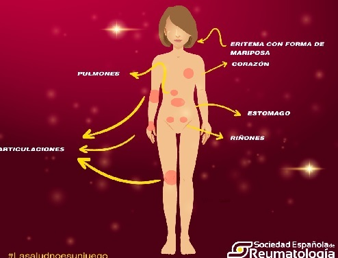

Lupus Eritematoso Sistémico
Fecha: 10 de septiembre de 2024
Autores: Jani Natasha Paredes Villalba y Lucía Giménez Pelegrín
Descripción:
En las personas con Lupus, el sistema inmunitario del cuerpo, el cual está diseñado para combatir las sustancias ajenas al organismo, se vuelve hiperactivo, formando anticuerpos que atacan a los tejidos y a órganos sanos, incluyendo la piel, las articulaciones, los riñones, el cerebro, el corazón, los pulmones y la sangre. Como se indica en Tratado de Inmunología, esta respuesta autoinmune puede tener consecuencias severas para la salud.
Causas:
- Factores genéticos: La tasa de coincidencia en gemelos monocigotos es de aproximadamente 25% y en gemelos dicigotos es del 2%. Los genes del complejo mayor de histocompatibilidad (HLA-A1, B8 y DR3) están ligados al lupus. También se han identificado locus en ratones (Sle1, Sle2 y Sle3) que promueven la enfermedad.
- Factores ambientales: La radiación ultravioleta es el factor ambiental más ligado al lupus, exacerbando la enfermedad en el 70% de los pacientes.
- Defectos en la apoptosis: Defectos en la apoptosis pueden contribuir a la persistencia de clones autorreactivos de células B y T, lo que podría desencadenar enfermedades autoinmunes como el lupus.
- Alteraciones inmunológicas: Desequilibrio entre TNF-alfa y su inhibidor soluble. Niveles elevados de IL-10 e interferón alfa.
Síntomas:
Los síntomas más frecuentes son: inflamación de órganos, tejidos y células. Cabe resaltar que debido a la presencia de autoanticuerpos y complejos inmunitarios, la exposición a radiación ultravioleta puede exacerbar los síntomas, como erupciones cutáneas.
Afecciones del Lupus:
Pruebas y exámenes:
- Anticuerpos anti-DNA de doble cadena: Son los anticuerpos más estudiados en lupus y constituyen un subgrupo de anticuerpos antinucleares.
- Niveles séricos de IL10 e interferón alfa: Elevados en pacientes con lupus y se correlacionan con la actividad de la enfermedad.
- Cantidad de células apoptóticas: Aumentada en pacientes con LES.
Tratamientos:
Algunos de los métodos para abordar esta enfermedad incluyen inmunosupresores, corticoides y antipalúdicos para controlar la respuesta autoinmune y la inflamación.
Expectativas:
La enfermedad del Lupus puede ser incapacitante, pero gracias al tratamiento, la mayoría de pacientes pueden llevar una vida normal en el entorno laboral y familiar. Es posible que en el trabajo se tengan que hacer algunas adaptaciones para poder seguir el ritmo sin dificultad, pero esto dependerá de cada persona.